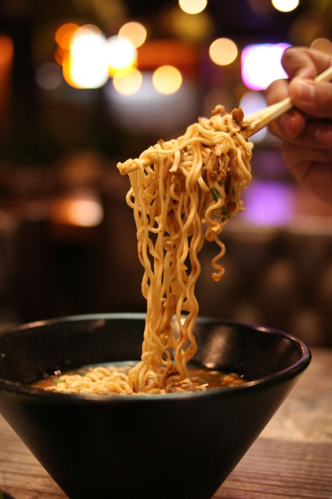
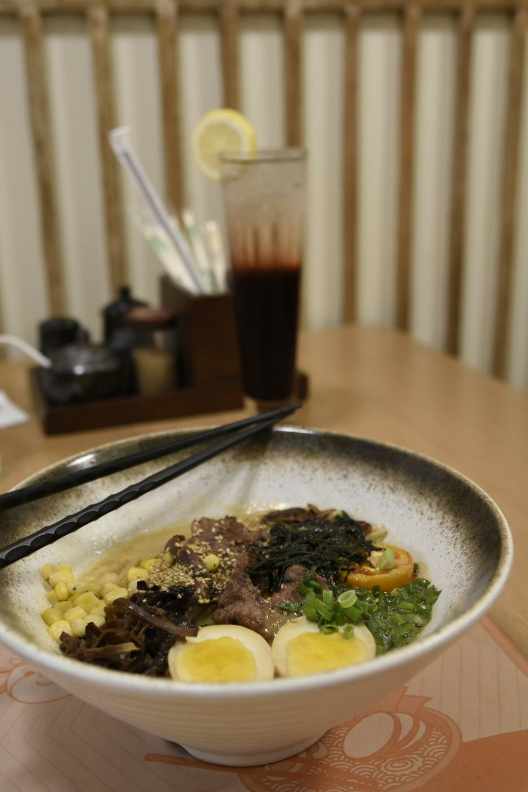
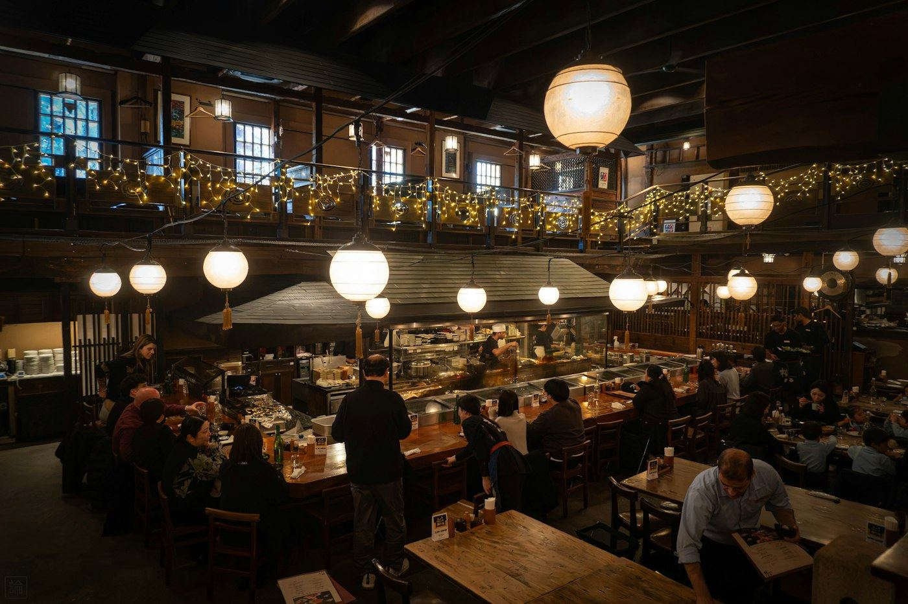

Eighteen hours
in every bowl.
Broths simmered overnight, noodles made by hand each morning and small plates built for sharing, with sake and Japanese whisky poured at the bar.

The bowls we're known for
Three bowls that have been on the menu since day one. Tap any dish to see what goes into it.

Eight courses,
eight seats.
Thursday to Saturday, Chef Name cooks a seasonal tasting menu at the counter, from raw fish to a final half-bowl of ramen, with an optional sake pairing.
- Seasonal sashimi 刺身
- Chawanmushi, dashi custard 茶碗蒸し
- Charcoal-grilled wagyu skewer 串焼き
- Half bowl, chef's broth of the week ラーメン
- Matcha & black sesame 甘味
Three things we never rush

The broth
Pork bones roll at a hard boil for eighteen hours until the broth turns rich and creamy. Our shio and vegan broths are built on kombu and shiitake.

The noodles
Made every morning in-house with high-protein flour and kansui, cut thin for tonkotsu and wavy for miso so each holds its broth.

The room
A long cedar counter, paper lanterns and a small bar. Come for a quick bowl or settle in for small plates and sake.
"The tonkotsu is as good as anything we've had outside Fukuoka."Publication
"A serious kitchen in a calm, beautiful room. Order the gyoza twice."Local critic
"The chef's counter is one of the best evenings in the city."Guide name
Reserve a table
Walk-ins are always welcome at the bar. For tables and the Chef's Counter, we recommend booking ahead.